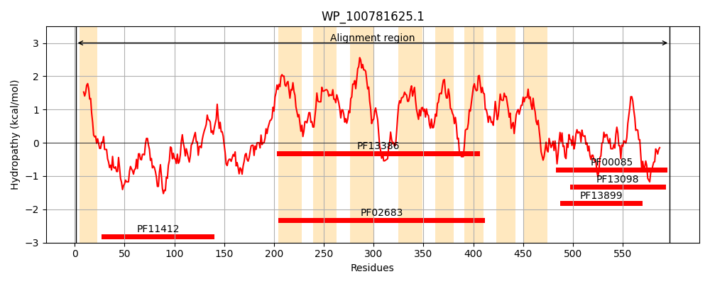
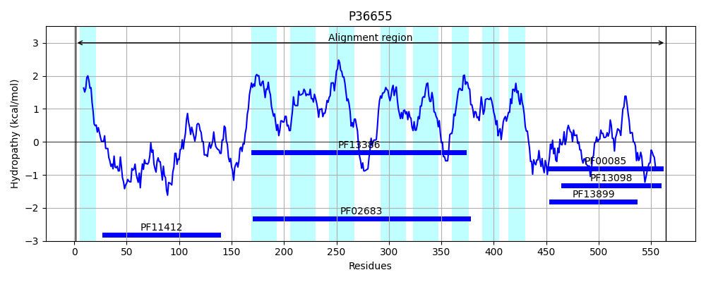
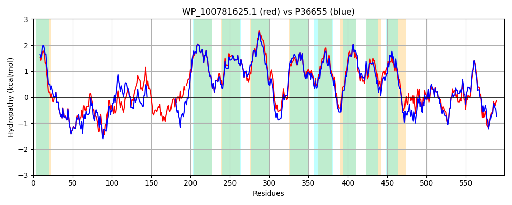

Hit Accession: P36655
Hit TCID: 5.A.1.1.1
Hit Description: gnl|BL_ORD_ID|10066 gnl|TC-DB|P36655|5.A.1.1.1 THIOL:DISULFIDE INTERCHANGE PROTEIN DSBD PRECURSOR (C-TYPE CYTOCHROME BIOGENESIS PROTEIN CYCZ) (INNER MEMBRANE COPPER TOLERANCE PROTEIN) - Escherichia coli.
Mach Len: 599
e:0.000000
Query TMS Count : 9
Hit TMS Count: 9
TMS-Overlap Score: 6.550000
Predicted Substrates:CHEBI:10545;electron
BLAST Alignment:
Score: 2292 , Bit scores: 887 bits, E-value: 0.0e+00, Alignment length: 599, Percentage identity: 75
Query: 1 MAYRIITLILLLCSTSATAGLFDAPGRSNFVPADQAFAFDFQQQQHDVNLSWQIKDGYYLYRQQFTFRAAGATIDEPALPAGEWHQDEFYGKSEIFRQRLTVPVTVKQAEKDATLTVTWQGCADAGFCYPPETKVIPLSAVLATSADGQATAIEPMPSTSSRPAFNPPLPVEPRPAPELATSPAPAAVPPADTP-ARLPFTALWALLIGIGIAFTPCVLPMYPLISGIVLGGKQRLSTARALLLAFIYVQGMALTYTALGLVVAAAGLQFQAALQHPYVLAGLSVVFILLALSMFGLFTLQLPSSLQTRLVLLSNKRQGGSPGGVFAMGAIAGLICSPCTTAPLSAILLYIAQSGNLWLGGGTLYLYALGMGLPLILVTVFGNRLLPKSGPWMSHVKTAFGFVILALPVFLLERIVGDPCGLRLWSMLGVAFFSWAFITSLGATRPWMRLVQIILLAAALVSARPLQDWAFGAPAVEQ-QAHLTFTRVNSVAELNQALAQAKGQPVMLDLYADWCVACKEFEKYTFSSPDVQQALKGTVLLQIDVTKNSPQDVALLKHLQVLGLPTILFFNAEGQEQPERRVTGFMDAAAFSAHLRDWQ 597
MA RI TLILLLCSTS AGLFDAPGRS FVPADQAFAFDFQQ QHD+NL+WQIKDGYYLYR+Q A I + LP G WH+DEFYGKSEI+R RLT+PVT+ QA ATLTVT+QGCADAGFCYPPETK +PLS V+A +A +P P +VP + P A+LPF+ALWALLIGIGIAFTPCVLPMYPLISGIVLGGKQRLSTARALLL FIYVQGMALTYTALGLVVAAAGLQFQAALQHPYVL GL++VF LLA+SMFGLFTLQLPSSLQTRL L+SN++QGGSPGGVF MGAIAGLICSPCTTAPLSAILLYIAQSGN+WLGGGTLYLYALGMGLPL+L+TVFGNRLLPKSGPWM VKTAFGFVILALPVFLLER++GD GLRLWS LGVAFF WAFITSL A R WMR+VQIILLAAALVS RPLQDWAFGA Q Q HL FT++ +V ELNQAL +AKG+PVMLDLYADWCVACKEFEKYTFS P VQ+AL TVLLQ +VT N QDVALLKHL VLGLPTILFF+ +GQE P+ RVTGFMDA FSAHLRD Q
Sbjct: 1 MAQRIFTLILLLCSTSVFAGLFDAPGRSQFVPADQAFAFDFQQNQHDLNLTWQIKDGYYLYRKQIRITPEHAKIADVQLPQGVWHEDEFYGKSEIYRDRLTLPVTINQASAGATLTVTYQGCADAGFCYPPETKTVPLSEVVANNA-----------------------------------APQPVSVPQQEQPTAQLPFSALWALLIGIGIAFTPCVLPMYPLISGIVLGGKQRLSTARALLLTFIYVQGMALTYTALGLVVAAAGLQFQAALQHPYVLIGLAIVFTLLAMSMFGLFTLQLPSSLQTRLTLMSNRQQGGSPGGVFVMGAIAGLICSPCTTAPLSAILLYIAQSGNMWLGGGTLYLYALGMGLPLMLITVFGNRLLPKSGPWMEQVKTAFGFVILALPVFLLERVIGDVWGLRLWSALGVAFFGWAFITSLQAKRGWMRIVQIILLAAALVSVRPLQDWAFGATHTAQTQTHLNFTQIKTVDELNQALVEAKGKPVMLDLYADWCVACKEFEKYTFSDPQVQKALADTVLLQANVTANDAQDVALLKHLNVLGLPTILFFDGQGQEHPQARVTGFMDAETFSAHLRDRQ 564 | Protein Hydropathy Plots: |
|---|
|  |  |
Pairwise Alignment-Hydropathy Plot:
|
|---|
|  |